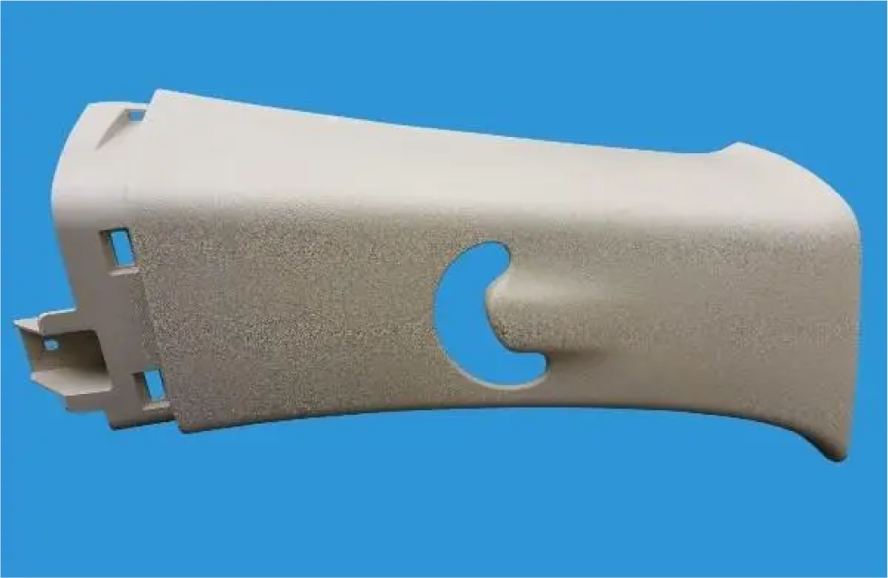

Material
iron

Basic attributes

Physical
Electrical conductivity: Iron has good electrical conductivity
Thermal conductivity: Iron also has good thermal conductivity
Ductility: Iron has some ductility and can be stretched into filaments or beaten into thin sheets
Ferromagnetism: Iron can be attracted to magnets and is ferromagnetic
Thermal conductivity: Iron also has good thermal conductivity
Ductility: Iron has some ductility and can be stretched into filaments or beaten into thin sheets
Ferromagnetism: Iron can be attracted to magnets and is ferromagnetic
Chemical properties
Compounds: Important compounds of iron include ferric oxide (Fe₂O₃),
ferric tetroxide (Fe₃O₄), ferric chloride (FeCl₃) and iron complexes
Presence in nature
Main minerals: hematite (mainly ferric oxide), magnetite (mainly ferric
oxide) and siderite (mainly ferrous carbonate), etc
Industrial preparation
Raw materials: The industrial preparation of iron is usually obtained by
smelting iron ore, coke and limestone in a blast furnace
Methods: including blast furnace method, direct reduction method, melt reduction method, plasma method, etc
Classification: According to the different carbon content, it can be divided into pig iron, wrought iron and steel
Methods: including blast furnace method, direct reduction method, melt reduction method, plasma method, etc
Classification: According to the different carbon content, it can be divided into pig iron, wrought iron and steel
Fields of application
 Polyethylene
Polyethylene
Essential
Chemical formula: Formed by polymerization of ethylene monomer, the
chemical formula is usually -(CH2-CH2)n-.
Classification: Polyethylene is mainly divided into three categories: linear low-density polyethylene (LLDPE), low-density polyethylene (LDPE) and high-density polyethylene (HDPE).
Classification: Polyethylene is mainly divided into three categories: linear low-density polyethylene (LLDPE), low-density polyethylene (LDPE) and high-density polyethylene (HDPE).
Physical
Appearance: Polyethylene plastics are usually milky white, odorless,
odorless, non-toxic, and waxy particles with a dull surface.
Density: Different types of polyethylene have different densities. For example, LDPE has a lower density of about 0.918 g/cm³; The density of HDPE is higher, about 0.945~0.96 g/cm3.
Melting Point: The melting point also varies depending on the species. The melting point of LDPE is low, about 105~115 °C; HDPE, on the other hand, has a higher melting point, about 125~137°C.
Other characteristics: polyethylene plastic has excellent low temperature resistance (the lowest use temperature can reach -100~-70 °C), good chemical stability, and can resist the erosion of most acids and alkalis (not resistant to acids with oxidizing properties). In addition, it also has excellent resistance to most domestic and industrial chemicals, insoluble in general solvents at room temperature, low water absorption, and excellent electrical insulation
Density: Different types of polyethylene have different densities. For example, LDPE has a lower density of about 0.918 g/cm³; The density of HDPE is higher, about 0.945~0.96 g/cm3.
Melting Point: The melting point also varies depending on the species. The melting point of LDPE is low, about 105~115 °C; HDPE, on the other hand, has a higher melting point, about 125~137°C.
Other characteristics: polyethylene plastic has excellent low temperature resistance (the lowest use temperature can reach -100~-70 °C), good chemical stability, and can resist the erosion of most acids and alkalis (not resistant to acids with oxidizing properties). In addition, it also has excellent resistance to most domestic and industrial chemicals, insoluble in general solvents at room temperature, low water absorption, and excellent electrical insulation
Fields of application
Packaging industry: polyethylene plastic is mainly used to make plastic
wrap, vest plastic bags, plastic food bags, etc. Due to its non-toxic,
tasteless and odorless characteristics, it is widely used in the field
of food packaging.
Agriculture: It is used to make agricultural mulch film to increase soil temperature, maintain soil moisture, and promote crop growth.
Construction: In the construction sector, polyethylene plastic can be used to make waterproofing membranes, pipes, etc.
Others: In addition, polyethylene plastic is also used to make everyday products such as baby bottles, pails, and kettles, as well as insulation and sheaths for wires and cables
Agriculture: It is used to make agricultural mulch film to increase soil temperature, maintain soil moisture, and promote crop growth.
Construction: In the construction sector, polyethylene plastic can be used to make waterproofing membranes, pipes, etc.
Others: In addition, polyethylene plastic is also used to make everyday products such as baby bottles, pails, and kettles, as well as insulation and sheaths for wires and cables
Production process
The production of polyethylene plastics mainly uses high-pressure and
low-pressure methods. The high-pressure method for the production of
LDPE is the most technologically mature method in the production of PE
resin, while the low-pressure method is mainly used for the production
of HDPE and LLDPE. These production processes require specific catalysts
and reaction conditions to ensure product quality and performance.

Definition
Carbon fiber reinforced polymer (CFRP) is a high-performance composite
material, which is mainly composed of carbon fiber as a reinforcing
material and resin (such as epoxy resin) as a matrix material.
Characteristic
Fields of application
Aerospace: Due to its lightweight and high-strength characteristics,
CFRP is widely used in the aerospace field, such as aircraft fuselage,
wings, tails, etc.
Automotive industry: CFRP is used in automotive manufacturing to reduce body weight, improve fuel efficiency, and enhance body structural strength.
Sports equipment: Sports equipment such as high-performance bicycles, golf clubs, and tennis rackets are often manufactured with CFRP to reduce weight and improve performance
Automotive industry: CFRP is used in automotive manufacturing to reduce body weight, improve fuel efficiency, and enhance body structural strength.
Sports equipment: Sports equipment such as high-performance bicycles, golf clubs, and tennis rackets are often manufactured with CFRP to reduce weight and improve performance

Construction & Fabrication
CFRP is composed of carbon fiber and resin matrix through lamination,
injection molding, pultrusion and other processes.
Carbon fibers exist in the form of fiber bundles or fabrics that provide strength and stiffness to composite materials; The resin matrix holds the carbon fibers in place and transmits the load.
Carbon fibers exist in the form of fiber bundles or fabrics that provide strength and stiffness to composite materials; The resin matrix holds the carbon fibers in place and transmits the load.
Trends
New materials
1 Boronene material
Characteristic
High electrical conductivity: Boron ink has excellent electrical
conductivity and is expected to be used in high-performance electronic
devices.
High strength: Its mechanical strength is also extremely high, making it an ideal high-strength material.
Chemical stability: It shows good chemical stability at room temperature and is not easy to be oxidized or corroded.
High strength: Its mechanical strength is also extremely high, making it an ideal high-strength material.
Chemical stability: It shows good chemical stability at room temperature and is not easy to be oxidized or corroded.
Application prospects
Energy storage: It can be used to develop high-performance batteries and
supercapacitors.
Electronic devices: Used as conductive channels or electrode materials in electronic devices to improve device performance.
Composite materials: as a reinforcing phase, improve the mechanical properties and electrical conductivity of composite materials
Electronic devices: Used as conductive channels or electrode materials in electronic devices to improve device performance.
Composite materials: as a reinforcing phase, improve the mechanical properties and electrical conductivity of composite materials

Definition
Graphene is a new nanomaterial with the thinnest, hardest, and strongest
electrical and thermal conductivity discovered so far, and is known as
"black gold" and "king of new materials".
Characteristic
Application prospects
New energy field: Graphene has huge application potential in the lithium
battery and supercapacitor market, and the market size is expected to
exceed tens of billions of yuan.
Composite materials: Graphene is also widely used in plastics, rubber, coatings, conductive inks and other fields
Composite materials: Graphene is also widely used in plastics, rubber, coatings, conductive inks and other fields



Post-processing methods of wood
Sanding:
Sanding is an important step in the post-processing of wood to achieve a smooth, even surface. It involves the use of sanding tools or machines with abrasive materials to remove rough edges, bumps, or scratches from the surface of the wood. Grinding can be done manually or with power tools, depending on the size and complexity of the workpiece. After sanding, the wood can be further surface treated with dyes, varnishes, or paints.
Sanding is an important step in the post-processing of wood to achieve a smooth, even surface. It involves the use of sanding tools or machines with abrasive materials to remove rough edges, bumps, or scratches from the surface of the wood. Grinding can be done manually or with power tools, depending on the size and complexity of the workpiece. After sanding, the wood can be further surface treated with dyes, varnishes, or paints.